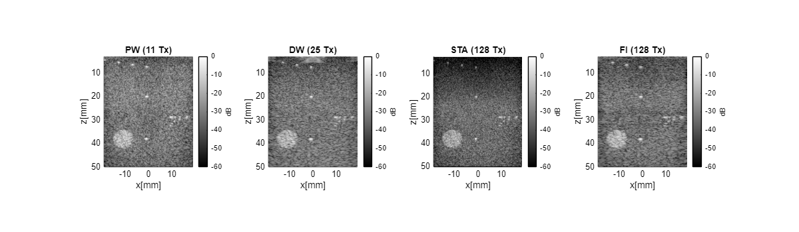
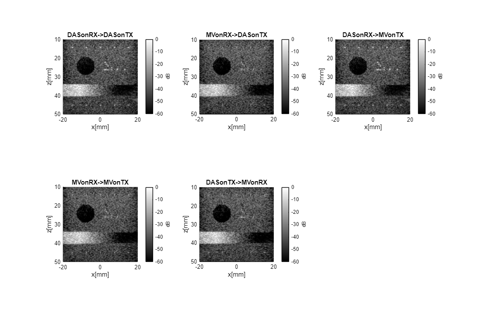
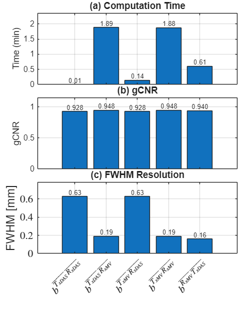

The Generalized Beamformer
The Generalized Beamformer (GB) is the unified, pixel-based beamforming framework at the core of USTB — it is what midprocess.das actually implements. A single core expression reconstructs plane-wave, diverging-wave, single-element (STA), and focused transmit sequences alike, with only the transmit delay model and apodization parameters changing between them.
Rindal, O. M. H., Vrålstad, A. E., Avdal, J., Fiorentini, S., Austeng, A., Rodriguez-Molares, A. (2026). The Generalized Beamformer in the UltraSound ToolBox. Ultrasonics, 170, 108289. doi:10.1016/j.ultras.2026.108289
One framework, four transmit sequences
The same midprocess.das object beamforms focused, diverging, plane-wave, and single-element (STA) transmit sequences. Only the transmit apodization and delay model configuration change; the delay-and-sum core is shared. Below, all four sequences are beamformed from the same L7 linear-array acquisitions and produce comparable image quality, despite using fundamentally different transmit wavefronts:

Fig. 5 in the paper: plane wave (11 Tx), diverging wave (25 Tx), single-element/STA (128 Tx), and focused (128 Tx) imaging of the same CIRS phantom, all beamformed with midprocess.das.
The only code that differs between transmit types is the apodization/delay-model setup — everything downstream (mid.go()) is identical:
mid = midprocess.das();
mid.dimension = dimension.receive;
mid.channel_data = channel_data;
mid.scan = scan;
if contains(filename, 'FI')
% Focused: hybrid spherical transmit delay model, tight receive MLA
mid.spherical_transmit_delay_model = spherical_transmit_delay_model.hybrid;
mid.pw_margin = 2/1000;
mid.transmit_apodization.window = uff.window.tukey25;
mid.transmit_apodization.f_number = 2.5;
mid.transmit_apodization.MLA = MLA;
mid.transmit_apodization.MLA_overlap = MLA;
mid.transmit_apodization.minimum_aperture = [2.5e-03 2.5e-03];
else
% Plane wave / diverging wave / STA: no transmit apodization window
mid.transmit_apodization.window = uff.window.none;
mid.transmit_apodization.f_number = 1.7;
end
mid.receive_apodization.window = uff.window.hamming;
mid.receive_apodization.f_number = 1.7;From TheGB_all_transmit_sequences.m — full script (with data download, single-transmit vs. compounded display, and acquisition-parameter table) published under Publications.
Synthetic transmit focusing for adaptive beamforming
Because the GB exposes the delayed data per transmit event before compounding (dimension.none/dimension.receive/dimension.transmit), it enables a novel synthetic transmit focusing (STF) strategy: coherently combine signals across transmit events first, then apply adaptive processing (e.g. Coherence Factor or Minimum Variance) on the already-focused data — instead of running the adaptive processor once per transmit event and only compounding afterwards. For Coherent Plane-Wave Compounding (CPWC), this reduces computational complexity substantially while improving resolution and maintaining contrast:

Fig. 7 in the paper: five ways of combining DAS and Capon Minimum Variance (MV) across receive and transmit dimensions on the same CPWC acquisition.

Synthetically focusing the transmit dimension first and running MV once on receive (DASTX → MVRX) is roughly 13× faster than double-adaptive MV-on-MV (0.14 vs. 1.88 min) while matching its resolution (0.19 mm FWHM) and gCNR.
Synthetic transmit focusing sums the delayed data across the transmit dimension first (synthesizing a focused transmit), then feeds that into an adaptive postprocess configured for the receive dimension:
% Step 1: DAS on transmit only (synthesizes a focused transmit)
das.dimension = dimension.transmit;
das.receive_apodization = receive_apodization_none_window;
b_data_das = das.go();
% Step 2: Apply adaptive beamforming across the receive dimension
adapt_rx.input = b_data_das;
img = adapt_rx.go();Trimmed from CPWC_double_adaptive_redone.m (adapt_rx is a postprocess.capon_minimum_variance with dimension.receive) — see the full script, all five combinations, and the gCNR/resolution analysis under Publications.
Try it yourself
- Browse the MATLAB scripts used to produce the paper's figures, including cardiac, fetal, and sonar applications.
- See the published, executed HTML output of the two scripts featured above, with full code and console output.
- Download the L7 datasets (plane wave, diverging wave, STA, focused) used in the all-transmit-sequences example.
Citing this work
If USTB's beamforming contributes to your published work, please cite both the IUS 2017 toolbox paper and the Generalized Beamformer paper above — see Citation for the full policy and machine-readable metadata. midprocess.das also prints a one-time reminder of both references to the MATLAB console the first time it is run in a session.